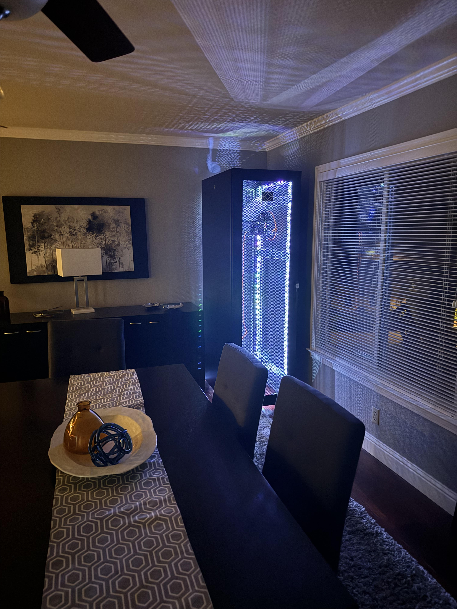

I've been slowly building out my own homelab so I can learn more about servers, virtualization, and networking. It all started with a single used server and has grown into a small rack with Proxmox, VLANs, and a dedicated machine for running virtual machines. Working on this setup has helped me understand how real data centers work and has made me much more confident tinkering with hardware and operating systems.
This is my pride and joy: